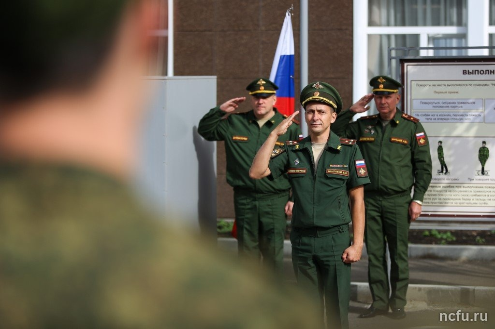
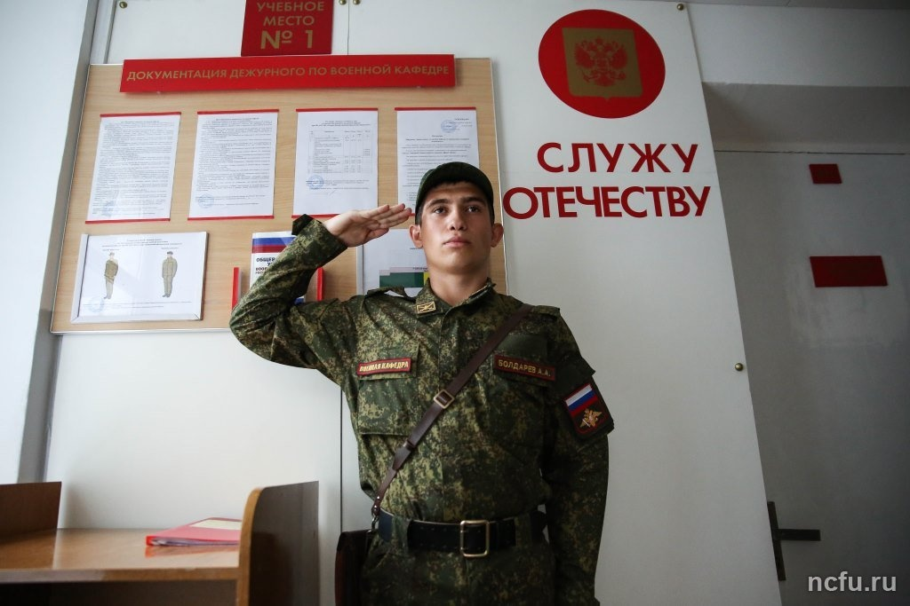
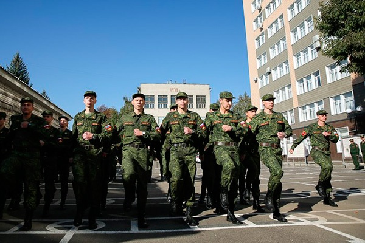

Контактная информация:
Адрес: г. Ставрополь, ул. Индустриальная, 27, учебный корпус № 14
Телефон: (8652) 33-04-98
Email: vuc@ncfu.ru
ИНФОРМАЦИЯ ДЛЯ ПОСТУПАЮЩИХ В ВОЕННЫЙ УЧЕБНЫЙ ЦЕНТР В 2020 ГОДУ!
В настоящий момент списки граждан, допущенных к военной подготовке по программам "солдат" и "сержант запаса", находятся на утверждении в главном командовании Сухопутных войск вооруженных сил Российской Федерации. Актуальная информация о поступивших будет размещена на сайте СКФУ после 20 августа 2020 года.
(8652) 33-04-98.
Порядок проведения конкурсного отбора
График проведения конкурсного отбора
Документальное сопровождение
- Положение о военных учебных центрах при федеральных государственных образовательных организациях высшего образования
Постановление Правительства РФ № 848 от 03.07.2019 г. - Перечень создаваемых учебных центров при федеральных государственных образовательных организациях высшего образования
Распоряжение Правительства РФ № 427-р от 13.03.2019 г. - Положение о Военном учебном центре при СКФУ
от 30 октября 2019 г.
Кадровый состав

Начальник Военного учебного центра, полковник
Начальник Военного учебного центра, полковник
Начальник Военного учебного центра, полковник
Начальник Военного учебного центра, полковник